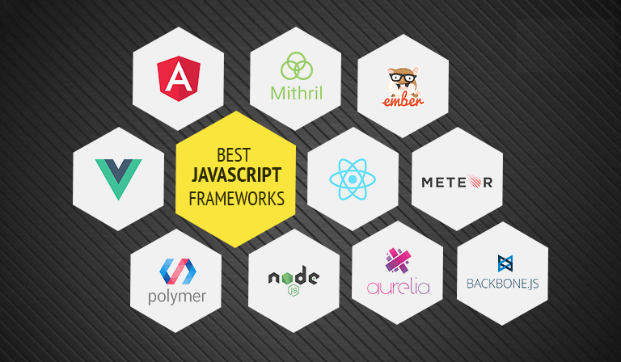

JavaScript frameworks have revolutionized web development, empowering developers to build powerful and interactive web applications with ease. With a plethora of options available, choosing the right framework can be daunting. In this guide, we'll explore the diverse landscape of JavaScript frameworks, highlighting their features, use cases, and advantages to help you make informed decisions for your projects.
React, developed by Facebook, is one of the most popular JavaScript libraries for building user interfaces. Its component-based architecture, virtual DOM, and declarative syntax make it highly efficient and flexible. React's ecosystem includes tools like React Router for client-side routing and Redux for state management. It's widely used for building single-page applications, progressive web apps, and mobile applications using React Native.
Angular, developed and maintained by Google, is a comprehensive framework for building large-scale, enterprise-grade web applications. It provides a robust MVC architecture, dependency injection, and two-way data binding. Angular's CLI simplifies project setup and management, while Angular Material offers pre-built UI components for rapid development. It's suitable for building complex web applications with features like forms, routing, and authentication.
Vue.js is a progressive JavaScript framework known for its simplicity and versatility. It offers a lightweight core library with reactive data binding and component-based architecture. Vue's ecosystem includes Vuex for state management and Vue Router for routing. With its gentle learning curve and intuitive syntax, Vue.js is popular among developers for building interactive interfaces and single-page applications.
While not a traditional front-end framework, Node.js deserves mention for its significant impact on JavaScript development. Node.js allows developers to run JavaScript on the server-side, enabling full-stack JavaScript development. It's used for building scalable, real-time applications and APIs. Node.js's event-driven, non-blocking I/O model makes it well-suited for handling concurrent requests and building high-performance web servers.
Express.js is a minimalist web framework for Node.js, designed for building web applications and APIs. It provides a robust set of features for routing, middleware, and template engines. Express's lightweight and unopinionated nature make it highly flexible, allowing developers to create custom solutions tailored to their specific requirements. It's widely used in combination with Node.js to build RESTful APIs and server-side applications.
Next.js is a React framework for building server-rendered and statically generated web applications. It simplifies the process of building React applications by providing features like server-side rendering, static site generation, and automatic code splitting. Next.js's built-in routing, data fetching, and internationalization support make it an excellent choice for building SEO-friendly, high-performance web applications with React.
JavaScript frameworks have transformed the landscape of web development, offering developers powerful tools and abstractions to build modern, feature-rich web applications. Whether you're building a small project or a large-scale enterprise application, there's a JavaScript framework suited to your needs. By understanding the features, use cases, and advantages of different frameworks, you can choose the right tools to accelerate your development workflow and build exceptional web experiences.